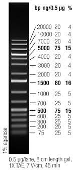
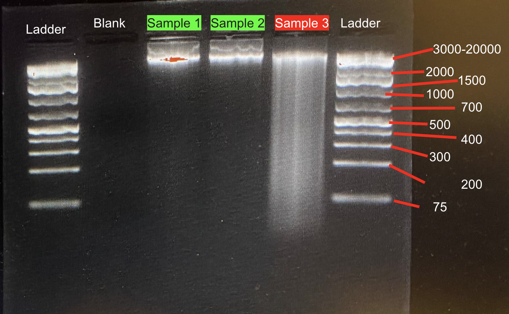
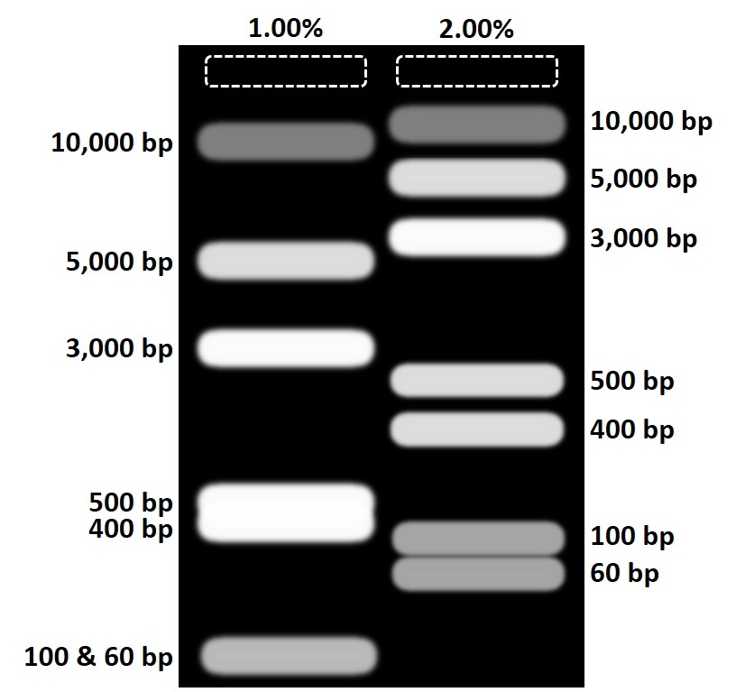

Gel Electrophoresis
We are Ethidium-Bromide Free!
New Protocol adapted from OGL:
You can make either a 1% or 2% agarose gel. We have been using 2% gels because our 1% gels broke often and did not give us as clear results.
Dilute 10X TAE Buffer to 1X. Measure 900mL MilliQ H20 and 100mL 10X TAE in the large plastic graduated cyliner. Combine and store in a 1L labelled glass bottle. The recipe for making more 10X TAE Buffer is below and here
Mix the gel components.
For a 1% agarose gel:
- Small gel: 0.60g agarose + 60 mL 1X TAE Buffer add links to recipe
- Medium gel: 1 g agarose + 100 mL 1X TAE Buffer
For a 2% agarose gel: i. Small gel: 1.2g agarose + 60 mL 1X TAE Buffer
- Medium gel: 2g agarose + 100 mL 1X TAE Buffer
Add agarose, then 1X TAE to an Erlenmeyer flask.
Use the magnetic stirring plate (put a magnet inside the Erlenmeyer flask) to mix. Turn the RPM into the 500s until all the clumps are gone.
Melt the gel.
- Microwave the flask with agarose mixture for ~30 seconds.
- Always watch for boiling. If mixture begins to bubble, remove it immediately and carefully swirl until bubbles are gone.
- With hot mitt, remove the flask from microwave and gently swirl.
- Be careful—it will be hot! Hold the flask away from you and gently swirl to avoid splashing.
- Return the flask to microwave and continue heating for another 30-40 seconds until mixture is clear and there are no agarose particles.
- Microwave the flask with agarose mixture for ~30 seconds.
Allow to cool.
- Gently swirl while cooling. The solution should be cool enough to hold in the palm of your hand. This can take a couple minutes, please be patient.
Add GelRed:
- Small gel: 6ul.
- Medium gel: 10 uL
- GelRed can be found in the drawer labeled “Lotterhos” in the shared wet lab/gel room.
- Gently swirl until the stain is dissolved (you should not be able to see any red stain in the gel).
Pour the gel.
Use masking tape to create walls on either side of the tray to contain the solution when poured. Test tape by filling tray with water first. Use multiple layers of tape to make sure it doesn’t leak.

- If you are having issues with this method, you can set the gel in the rig if you flip the orientation of the tray so that it is confined. Make sure to wet the red rubber gaskets so that it is easier to take out after it has set.

- If you are having issues with this method, you can set the gel in the rig if you flip the orientation of the tray so that it is confined. Make sure to wet the red rubber gaskets so that it is easier to take out after it has set.
Pour gel slowly to avoid bubbles.
- If bubbles form, you can remove or pop them using the casting combs.
Add casting combs into the slots.
- There are 2 pairs of combs for each size gel; one will create wider wells than the other. You can use either set of combs.
Rinse out the flask and hang on drying rack in Lotterhos lab.
Let the gel set for ~40 minutes.
- The gel should be solid, cool to the touch, and opaque.
- Once gel is set, remove the tape and combs.
- Remove combs slowly, pulling straight up.
Make sure that the power source is off, and the gel rig is unplugged from the power source before removing the top.
Place the tray with your gel in the gel rig with wells on the side with the black plug
- Samples will run from the black side toward red side.
- DNA “runs to red”

Fill rig with enough 1X TAE Buffer to just cover the entire gel.
- The rig doesn’t need to be filled all the way to the line, just enough to cover the gel.
Add ladder into the first well. if this is in the first well, shouldn’t this step come before the last? do you have to add the dye to the ladder? I can’t remember Switched order of 11 and 12, and you don’t need to add dye to ladder
- Typically, 2ul ladder.
- We use the Generuler 1kb Plus DNA. Before pipetting, centrifuge the ladder briefly with the loading dye (for balance) so that there are no drips on the sides of the tubes.
- Aliquots of ladder can be found in the -20 freezer.
- Typically, 2ul ladder.
Load the gel.
If there is any gel inside the wells, clean them out by pipetting up TAE and expelling it into the wells
Cut a piece of parafilm and tape to benchtop.
Using a pipette, add dots of 6X loading dye (1 for each sample) to parafilm.

- The loading dye is blue and can be found in the -20 freezer.
Using a pipette, add DNA sample to a dot of loading dye.

We use 3ul DNA + 1ul loading dye.
Mix by pipetting up and down slowly 3+ times.
Pipette 3 ul of the dye/sample solution into the proper well of the gel.
Repeat for each sample
- Change your pipette tip for each sample.
- Make sure to use new dot of dye for each sample.
When pipetting into gel wells, be careful not to break the agarose or stick the pipette tip too far into the well so that the sample ejects into the agarose. Position your pipette tip just inside the well and check for dye in the correct well after you pipette it. Check to see if the agarose around the well breaks. Take a note if the agarose breaks around a well. (Will add a photo here)
Here is a sample gel layout for how you could organize your samples into gels if you have a plate of 96. This layout uses 3 medium gels with 2 20-well combs each. Because there are so many wells in each row, it may be useful to have one member keeping track of which well is the next to load and another member to actually load the gel.
Gel 1: 
Gel 2: 
Gel 3: 
- Run the gel.
- Put the gel box cover into place.
- Make sure the wires are plugged in correctly (wire colors match plug colors).
- Turn on the power supply and set timer. For a 1% gel, set it for 130V for 30 minutes. For a 2% gel, we found that 90V for 30 to 40 minutes works better.
- Put the gel box cover into place.
If we have a 300 V power supply, can it handle 3 units running at 130 V at the same time? add saftey info. I wonder if this is why power supplies are breaking…
b. Check for bubbles rising at cathode (black plug) side to ensure the rig is working. If you do not see bubbles rising, the gel is not running.
https://user-images.githubusercontent.com/122108419/227600188-434bad92-3efc-433a-9fe5-2f391d6d55d0.MOV
c. When the gel is done running, turn the off power.
i. Never open the rig when the power is on.
Visualize the gel.
Turn the power supply off.
Remove the cover from the gel box.
Carefully remove the tray and gel.
- Try to drip excess buffer back into the rig, scraping the bottom of the tray on the edge of the box.
The gel doc (for visualizing the gel) is in OGL, in the room you walk through right before the autoclave room. The gel doc is a large grey machine on the benchtop next to a black computer. Open the gel doc tray and wipe it clean using MilliQ water and KimWipes.
- A small volume of water (<10ml) is sufficient.
Slide the gel onto the gel doc tray.
- Do so slowly to avoid creating bubbles under the gel.
- If you’re unsure if your gel has run long enough, you can leave gel in tray and visualize it. You can then return the gel to the rig and run it for longer if necessary.
Close the tray.
Open “Image Lab” application on the computer connected to the gel doc.
Check that the cord labeled “Gel doc” is plugged into the computer.
Select New Protocol.
Under “Application”, select Nucleic Acid Gels and then GelRed.
- The default setting is to optimize for most intense bands which prevents the gel from being over exposed but may make very faint samples undetectable.
- If necessary, under “Image Exposure” you can select exposure to optimize for faintest bands or set a manual exposure time.
- If you are running a gel with samples of highly variable concentrations, it may be useful to run protocols with each optimization option.
Select “Position Gel” (yellow button on the left side of the window).
- The program will ask you to check that the filter is set to Filter 1.
- Check that the arm on the upper right side of the gel doc is in the center position labeled Filter 1.
Open door on the front of the gel doc and position your gel.
- You can zoom in and out under image window on the computer screen.
- You can enable grid lines by checking the box in the bottom corner of the screen.
Close door and select “Run Protocol” (green button on the left side of the window).
Wait for the gel image to load.
Save image or change protocol and run again.
To save as .jpg image:
- Select File>Export>Export for Publication>Select Export.
- Change file type to .jpg.
- Name file and save in appropriate folder. We have a Lotterhos folder on the OGL computer.
Always clean the gel doc tray after use. You can use DI water from the squirt bottle near the gel doc and a Kimwipe to clean the tray of any remaining gel or TAE. Make sure the tray is dry before you leave.
Dispose of the gel in the mayo jar in the gel room labeled ‘Gel waste.’
Rinse gel tray and let dry on drying rack above the sink in the gel room.
Interpret your gel. See guidelines below (under the old gel protocol) for an example and information on how to interpret your gel.
Gel Interpretation
First, ensure your ladder ran cleanly. You want to see relatively straight and separated lines. Some will have higher feedback when imaging.
Use the ladder to determine the size in basepairs of your DNA samples.
Thermo Fisher GeneRuler 1 kb Plus Ladder, 75-20,000 kbp (ladder we have in the lab)

- As shown in the image above, the ladder has 15 distinct bands representing strands of 75 bp at the lowest band to 20,000 bp at the topmost band. In practice, however, lines representing 3,000-20,000 bp tend to be squished together. What matters most for genomic DNA to be sent for sequencing is ensuring your DNA strands are long enough (> 3,000 bp) to indicate a successful extraction.
Example Gel

2% agarose gel with ladders in the rightmost and leftmost wells, a blank in the second well from the right, and three oyster genomic DNA samples in the remaining wells.
Both ladders ran nicely. The bands are mostly spaced out with minimal streaking.
- Note the clustered bands in the ladders for 3,000-20,000 bp
The second well, a blank, contains nothing beyond loading dye. As there was no sample running there, the image shows no DNA present, which is as it should be.
Samples 1 and 2 ran properly- each has a clear distinct line placing them between 3,000-20,000 bp in length (appropriate for genomic DNA). These samples appear to be in a good state for sequencing.
Sample 3, on the other hand, is streaky, indicating that the DNA likely degraded during the electrophoresis process. There is one bright band up near the top in the 3,000-20,000 bp range, which is good, but this sample probably isn’t in the best shape for sequencing.
Troubleshooting
Agarose Percentages
What happens if I make the wrong percent agarose gel?
- Comparison between ladder expression in 1% vs. 2% agarose gels

Wavy Sample or Ladder Bands
When removing the combs from a set gel, remove very gently and pull them straight up and out to keep pieces of gel from getting loosened and knocked into the well.
Make sure not to touch the sides of the wells with the pipette tip when adding samples in.
E1 Error on Voltage Machine
The voltage machine may give an “E1” error and will not begin running. When this happens, check that there is enough TAE buffer in the rig such that the ends of the electrodes are submerged. Add more 1X TAE if not.
Also check that electrodes are tightened on each side. The red one on rig 2 tends to get a bit loose.
Streaky Samples
- Your sample may have degraded. Be careful not to leave DNA samples in the fridge for more than 4 or 5 days and try not to thaw and refreeze samples too many times.
Old Protocol:
The protocol for running a gel. Madeline’s lab notebook (labeled “Eppley”) has written protocols and troubleshooting for gels on pages 2-3 (not the new protocol).
Materials and Equipment
Agarose
1X TAE (you can also use TBE, but we regularly have TAE stock pre-made). Here’s a link to a TAE recipe for TAE. We should have all materials in the lab. If using 10x TAE stock, dilute with 100 mL TAE to 900 mL milliq water.
GelRed® 10,000X stock reagent (left-top drawer in the room with gel docks).
Erlenmeyer flask (should be in the room with gel docks).
Protocol
Tare a weigh boat on the scale.
Add 1.4 g of agarose to the weigh boat.
Pour 70 mL of 1x TAE buffer into a graduated cylinder.
Pour 35-40 mL of the TAE buffer into an Erlenmeyer flask, then add the agarose and swirl.
Microwave solution for ~45 seconds, or until it begins to boil.
Add more TAE buffer, but leave 10-20 mL in the graduated cylinder.
Microwave solution again until it begins to boil. Repeat until agarose is completely dissolved.
Add remaining TAE buffer (to cool solution).
Dilute the GelRed® 10,000X stock reagent into the molten agarose gel solution at 1:10,000 and mix thoroughly.
- (e.g., 5 µL of the GelRed 10,000X stock reagent added to 50 mL of the gel solution)
Running the Gel
This source detailes a full protocol for running a gel: https://www.addgene.org/protocols/gel-electrophoresis/
Source from Remy for Gel protocol (note that this is for an Ethidium Bromide system, and we are Ethidium-Bromide free at the MSC): Gel Electrophoresis protocol_lab interns.pdf